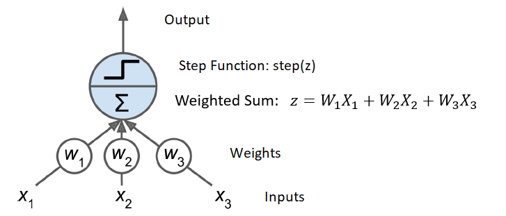

“Tuck Rule game, against the Raiders, might have been a fumble.” - Tom Brady
On January 19, 2002, the Oakland Raiders were leading the New England Patriots with 1:43 left to play in the game. Patriots QB Tom Brady dropped backed to pass but had the ball chopped out of his hands by Raiders CB Charles Woodson causing what appeared to be a fumble. The Raiders recovered the fumble which would seal their victory. However, the referees stated that Brady’s arm was in a forward motion and ruled the play as an incomplete pass. The Patriots would end up winning the game in OT in what become known as the “Tuck Rule Game.”
17.1 Introduction
The concept of human flight was inspired by observing the soaring of eagles, the sticky nature of gecko feet led to the invention of adhesive tapes, and myriad other breakthroughs have been sparked by the wonders of the natural world. It follows, then, that the intricate workings of the human brain could serve as the model for devising intelligent machinery. This line of thought led to the creation of artificial neural networks (ANNs), machine learning frameworks modeled on the intricate web of biological neurons in our brains. Yet, in the same way that modern aircraft do not replicate the precise movements of an eagle’s wings, ANNs have developed in ways that significantly depart from their biological counterparts.
ANNs are fundamental to deep learning, offering versatility, power, and scalability. They tackle complex machine learning challenges, from image classification (like Google Images) and voice recognition (such as Apple’s Siri) to recommending videos on YouTube.
But before we dive into the present and future of ANNs, let’s take a step back and trace their origins and evolution.
History of ANNs
Artificial Neural Networks (ANNs) have a surprisingly long history, dating back to their inception in 1943 by neurophysiologist Warren McCulloch and mathematician Walter Pitts. Their groundbreaking paper, “A Logical Calculus of Ideas Immanent in Nervous Activity,” introduced the first computational model suggesting how neurons in the brain might work together to process complex calculations using propositional logic, marking the debut of artificial neural network architecture. Over time, numerous other architectures have emerged.
Initially, ANNs fostered optimism about the imminent advent of truly intelligent machines. However, by the 1960s, it became evident that such expectations were premature, leading to a reduction in funding and a period of dormancy for ANNs. The early 1980s saw a resurgence in interest thanks to new architectures and improved training techniques. Yet, progress was gradual, and by the 1990s, other machine learning methods, like Support Vector Machines, seemed to offer more promising results and theoretical underpinnings, causing neural network research to once again pause.
Today, we’re experiencing a renewed fascination with ANNs, driven by several factors suggesting this wave might have a more lasting impact:
The abundance of data available for training, with ANNs often surpassing other techniques on complex tasks.
A significant increase in computational power, partially credited to Moore’s law and the demand for advanced GPU cards fueled by the gaming industry. Cloud platforms also play a crucial role in democratizing access to this computational power.
Enhancements in training algorithms, which, despite being minor, have significantly improved performance.
Some anticipated theoretical limitations of ANNs have proven manageable in practice, such as the concern about training algorithms getting stuck in local optima.
The virtuous cycle of funding and progress, where innovative ANN-based products generate headlines, attracting more interest and investment, which in turn leads to further advancements and even more groundbreaking applications.
Before exploring artificial neurons, let’s quickly overview a biological neuron. Typically found in animal brains, a neuron consists of a cell body with a nucleus, several dendrites, and a long axon extending significantly beyond the cell body to connect with other neurons via synapses at its branches, known as telodendria. Neurons communicate by transmitting electrical signals, triggering the release of neurotransmitters, which then activate other neurons based on the type of neurotransmitter.
Despite their simple individual function, neurons form extensive networks capable of complex processing, much like ants build a sophisticated anthill. The architecture of these networks, particularly in the brain’s cerebral cortex where neurons are arranged in layers, remains a key focus of scientific study.
McCulloch and Pitts’s model proposed a basic form of the biological neuron, later termed an artificial neuron, which processes binary inputs and outputs. Their model demonstrated that a network of such neurons could perform any logical calculation. Illustrations of these networks show basic logical functions like identity, AND, OR, and more complex propositions, indicating the foundational capabilities of these early neural networks.
17.1.1 Threshold Logic Unit
Introduced by Frank Rosenblatt in 1957, the Perceptron represents one of the most fundamental types of artificial neural network architectures. It operates using a special form of artificial neuron known as a threshold logic unit (TLU), or linear threshold unit (LTU). Unlike earlier models that used binary inputs and outputs, the TLU deals with numerical values for both. It assigns weights to its inputs, calculates the weighted sum, and then processes this sum through a step function to produce the output.

Threshold logic unit: an artificial neuron which computes a weighted sum of its inputs then applies a step function
17.2 The Perceptron
A single Threshold Logic Unit (TLU) performs straightforward linear binary classification by computing a linear combination of inputs. If the result surpasses a certain threshold, it assigns a positive class; otherwise, it assigns a negative class, functioning similarly to Logistic Regression or a linear SVM classifier.
A Perceptron consists of a single layer of TLUs, each connected to all inputs, forming what’s known as a fully connected or dense layer. Input neurons pass their received inputs directly through. Additionally, a bias neuron, always outputting 1, is included to facilitate processing. This setup allows a Perceptron, even with just two inputs, to simultaneously classify into three distinct binary categories, rendering it a multioutput classifier.
Architecture of a Perceptron with two input neurons, one bias neuron, and three output neurons.
The activation function activates artificial neurons in TLUs through a step function, with other types also available, not just step functions. Perceptron training, inspired by Hebb’s rule from his 1949 book, is based on the idea that frequent activation between two biological neurons strengthens their connection, aptly summarized as “Cells that fire together, wire together.” This concept, Hebbian learning, influences Perceptron training, which adjusts connection weights to minimize prediction errors. Training involves processing one instance at a time, adjusting weights for each misprediction to favor inputs leading to correct outcomes.
Unlike Logistic Regression classifiers that provide class probabilities, Perceptrons make predictions using a strict threshold, which sometimes makes Logistic Regression a preferred choice. In 1969, Marvin Minsky and Seymour Papert criticized Perceptrons for their inability to solve simple problems, a disappointment that led some researchers to abandon neural networks for other areas of artificial intelligence. However, this limitation can be overcome by using a network of multiple Perceptrons, known as a Multilayer Perceptron (MLP).
17.3 Example: Iris data
Let’s illustrate the Perceptron using the Iris dataset. We will first use just one TLU and only focus on the two species setosa and versicolor.
Note in the code how the weights are updated. In a Perceptron, the weights are updated using a simple rule designed to minimize the error in predictions over training iterations. The goal of the Perceptron learning algorithm is to find a set of weights that correctly classifies all training instances.
After making a prediction, the Perceptron checks if the prediction is correct. If the prediction is incorrect, the weights are updated using the rule: \[
w_{i(new)} = w_{i(old)} + \Delta w_i
\]
where \(w_{i(new)}\) is the updated weight, \(w_{i(old)}\) is the current weight, and \(\Delta w_i\) is the change in weight. The change in weight \(\Delta w_i\) is calculated as: \[
\Delta w_i = \eta (y - \hat{y}) x_i
\] Here, \(\eta\) is the learning rate (a small positive value that determines the step size of the update), \(y\) is the true label, \(\hat{y}\) is the predicted label, and \(x_i\) is the input feature value. The true label \(y\) and the predicted label \(\hat{y}\) are usually encoded as 1 for the positive class and -1 for the negative class. If the prediction is correct, there’s no need to update the weights for that particular instance.
Repeat: This process is repeated for all training instances for a number of epochs or until the algorithm reaches a specified criterion (e.g., a certain number of epochs or a threshold for the minimum number of errors).
The essence of this update rule is simple: if the prediction is correct, do nothing; if the prediction is incorrect, adjust the weights in the direction that would make the correct classification more likely in future predictions. This update mechanism allows the Perceptron to gradually converge towards a solution that separates the classes, provided that the data is linearly separable.
library(tidyverse)iris_binary=iris|>filter(Species%in%c('setosa', 'versicolor'))|>mutate(Species =if_else(Species=='setosa', 1, -1))perceptron_train=function(data, learning_rate=0.01, n_iter=100){n=ncol(data)-1# Number of featuresweights=rep(0, n+1)# Initialize weightslabels=data[,n+1]#keep track of the number of errors for each iterationerrors=vector("numeric", n_iter)#go through the entire dataset n_iter timesfor(iin1:n_iter){#for this iteration, start with no errorerror_count=0#update the weights one observation at a timefor(jin1:nrow(data)){# Calculate predictioninput=as.numeric(c(1, data[j, 1:n]))# Adding bias input as 1#the step functionprediction=ifelse(sum(input*weights)>=0, 1, -1)# Update weightsupdate=learning_rate*(labels[j]-prediction)weights=weights+update*input#check to see if there is an error in the predictionerror_count=error_count+ifelse(update!=0, 1, 0)}errors[i]=error_count}return(list(weights=weights, errors =errors))}#train the perceptronmodel=perceptron_train(iris_binary)print(model$weights)
[1] 0.020 0.022 0.072 -0.104 -0.044
#plot the error made each iterationtibble(iter =1:100, err =model$errors)|>ggplot(aes(x =iter, y =err))+geom_line()+xlab("Iterations")+ylab("Number of misclassifications")
#make predictions based on the trained weightsperceptron_predict=function(data, weights){n=ncol(data)input=cbind(1, data[, 1:(n-1)])|>as.matrix()# Add bias input as 1prediction=ifelse(input%*%matrix(weights)>=0, 1, -1)return(prediction)}predictions=perceptron_predict(iris_binary, model$weights)table(Predicted =predictions, Actual =iris_binary$Species)
Actual
Predicted -1 1
-1 50 0
1 0 50
This code defines a basic Perceptron model and applies it to a subset of the iris dataset, targeting a binary classification problem. The Perceptron function iterates through the dataset, adjusting the weights based on the learning rate. After training, the function returns the final weights and the number of errors per iteration, allowing us to evaluate the model’s performance and learning progress over time.
Note that the perceptron was able to make a perfect prediction. In fact, it only required just a few iterations before it was able to determine the weights to make the predictions with no errors. Remember that we only trained the perceptron on the data with no validation set or testing set. A reason for such great predictions is that the two species setosa and versicolor are clearly separable as seen below
iris|>filter(Species%in%c('setosa', 'versicolor'))|>ggplot(aes(x =Petal.Length, y =Petal.Width, color =Species))+geom_point()
What if we tried to classify only species versicolor and virginica displayed below?
iris|>filter(Species%in%c('virginica', 'versicolor'))|>ggplot(aes(x =Petal.Length, y =Petal.Width, color =Species))+geom_point()
This is not as cleary separable. Let’s see how the perceptron does.
# Load the iris dataset and filter for binary classificationiris_binary=iris|>filter(Species%in%c('virginica', 'versicolor'))|>mutate(Species =if_else(Species=='versicolor', 1, -1))# will code virginica as a 1 and versicolor as -1#train the perceptronmodel=perceptron_train(iris_binary)print(model$weights)
[1] 0.080 1.104 0.668 -1.410 -1.190
#plot the error made each iterationtibble(iter =1:100, err =model$errors)|>ggplot(aes(x =iter, y =err))+geom_line()+xlab("Iterations")+ylab("Number of misclassifications")
#make predictions based on the trained weightspredictions=perceptron_predict(iris_binary, model$weights)table(Predicted =predictions, Actual =iris_binary$Species)
Actual
Predicted -1 1
-1 50 3
1 0 47
First note the plot of the errors, it appears the errors converge to 2 errors per iteration with it jumping to 4 errors occasionally.
At the end, there are three versicolor species that we missclassify as virginica.
Remember, the Perceptron is a fundamental building block of neural networks and is most effective for simple linearly separable datasets. For more complex datasets or multiclass classification, we need to look into more advanced algorithms or use neural networks with multiple layers (Multilayer Perceptrons).
17.4 Multilayer Perceptron
A Multilayer Perceptron (MLP) consists of an input layer, several hidden layers of TLUs, and a final TLU output layer. The layers nearest the input are called lower layers, while those near the output are upper layers. All layers, except the output, feature a bias neuron and full interconnectivity with the subsequent layer.
Architecture of a Multilayer Perceptron with two inputs, one hidden layer of four neurons, and three output neurons.
When an MLP includes numerous hidden layers, it’s termed a deep neural network (DNN), the study of which falls under Deep Learning. This term is broadly applied to any neural network-based models, regardless of depth. Despite initial challenges in training MLPs, the introduction of the backpropagation training algorithm by David Rumelhart, Geoffrey Hinton, and Ronald Williams in 1986 marked a significant breakthrough, and it remains in use today.
17.5 Gradient Descent and Backpropagation
Gradient descent is like trying to find the lowest point in a valley when you’re standing in thick fog. Imagine you’re at a hilly park but can’t see much around you. You want to get to the lowest point of the park, where there’s a beautiful lake, but because of the fog (or in real life, because we don’t know the exact layout of our problem), you can’t see where the lake is directly.
So, what do you do? You feel the ground beneath your feet to figure out which way is downhill and take a step in that direction, hoping it’ll get you closer to the lake. After you take the step, you feel around again and take another step downhill. You repeat this process, each time moving in the direction that seems to go downhill, until you’re standing right next to the lake, at the lowest point.
In this analogy, the park represents a problem you’re trying to solve with many potential solutions (some good, some not so good), and the lake represents the best solution (the “lowest point”). The process of feeling for the downhill direction is like calculating the gradient, which tells you how to adjust your position to get closer to the best solution. The steps you take are like iterations in the algorithm, gradually improving the solution until it’s good enough or can’t get any better.
Let’s now describe gradient descent using mathematical notation.
Objective Function
Suppose you have a function \(f(\theta)\) you want to minimize, where \(\theta\) represents the parameters (or variables) of the function.
Gradient Calculation
The gradient of \(f\), denoted as \(\nabla f(\theta)\), is a vector that contains all the partial derivatives of \(f\) with respect to each parameter in \(\theta\). The gradient points in the direction of the steepest ascent. Mathematically, if \(\theta\) is a two-dimensional vector \(\theta = (x, y)\), then the gradient of \(f\) at \(\theta\) is:
To minimize \(f\), you want to go in the opposite direction of the gradient because that’s the direction of the steepest descent. So, you update \(\theta\) by taking a step opposite to the gradient:
Here, \(\alpha\) is the learning rate, a small positive number that controls the size of the step. Choosing a good value for \(\alpha\) is crucial: too small, and the algorithm will converge slowly; too large, and it may overshoot the minimum or even diverge.
Iterative Process
You repeat this update process iteratively:
Calculate the gradient of the current \(\theta\).
Update \(\theta\) by taking a step in the direction opposite to the gradient.
Repeat until the change in \(f(\theta)\) is smaller than a predefined threshold (indicating convergence) or until you reach a maximum number of iterations.
The iterative process can be summarized by the formula repeated for \(k = 1, 2, 3, \ldots\), until convergence:
This process gradually adjusts \(\theta\) to find the minimum value of \(f(\theta)\), optimizing the parameters of your model.
17.5.1 Backpropagation
Backpropagation, short for “backward propagation of errors,” is a core algorithm in the field of neural networks, enabling them to learn from observational data. It’s essentially a method for calculating the gradient (the direction and rate of change) of the loss function (which measures the difference between the predicted output and the actual output) with respect to each weight in the network. This gradient is then used by optimization algorithms like gradient descent to adjust the weights in a direction that minimizes the loss. Here’s how backpropagation works:
Forward Pass
Input Forwarding: The process begins by passing an input through the neural network, layer by layer, until the output layer produces its prediction.
Loss Calculation: The difference between the predicted output and the actual output (the ground truth) is calculated using a loss function.
Backward Pass
Local Gradients Calculation: Starting at the output layer, backpropagation calculates the gradient of the loss function with respect to each weight by applying the chain rule of calculus. This tells us how much a change in a weight would change the loss.
Error Propagation Backwards: This gradient calculation and error attribution process is performed layer by layer, moving backward from the output layer to the input layer. At each layer, the algorithm calculates how much each neuron’s output contributed to the error in the layers below.
Weight Update
Gradient Descent Application: With the gradients computed, gradient descent is then applied to adjust the weights. Each weight is updated in the direction that most reduces the loss, based on its gradient. The size of the step taken in this direction is determined by the learning rate.
Iteration
Iterate: This entire process is repeated for many iterations (forward pass, backward pass, weight update) across all the samples in the training data, often in small batches. With each iteration, the network weights are adjusted to minimize the loss, improving the model’s predictions.
Relationship Between Backpropagation and Gradient Descent
Backpropagation and gradient descent are connected. Backpropagation is the mechanism by which gradients are calculated efficiently for each weight in the network, taking into account the complex, interconnected structure of the neural network. Gradient descent is the optimization technique that uses these gradients to adjust the weights, aiming to minimize the loss function.
In summary, backpropagation computes the necessary information (gradients) to understand how to adjust neural network weights to reduce errors, while gradient descent is the strategy used to make those adjustments, leveraging the information provided by backpropagation.
Let’s delve into the specifics of the backpropagation algorithm:
It processes one small group of training instances at a time, known as a mini-batch (for instance, with 32 samples in each), cycling through the entire dataset multiple times. Each complete cycle is referred to as an epoch.
For each mini-batch, the process begins by feeding the data into the network’s input layer, which forwards it to the subsequent hidden layer. The algorithm calculates the outputs for all neurons in that layer for every sample in the mini-batch. These outputs are then relayed to the following layer, and this sequence continues until the final layer’s output is obtained. This sequence of operations is known as the forward pass, which resembles the prediction process but with the intermediate results being saved for later use in the backward pass.
The algorithm next evaluates the discrepancy between the network’s actual output and the intended output, utilizing a loss function to quantify the error.
It then determines the contribution of each output connection to the overall error, applying the chain rule—a crucial concept in calculus—to achieve a quick and precise calculation. Following this, it assesses the error contributions from each connection in the preceding layer, progressively working its way back to the input layer. This backward journey effectively calculates the error gradient across all the network’s connections by propagating the error gradient in reverse, which is why this technique is called backpropagation.
The final step involves adjusting the connection weights within the network through Gradient Descent, guided by the error gradients calculated in the previous step.
The backpropagation algorithm is pivotal because it systematically makes a prediction (forward pass), evaluates the prediction error, assesses the error contribution from each connection by moving in reverse through the layers (reverse pass), and adjusts the connection weights to minimize the error (Gradient Descent step).
17.6 Activation Functions
To ensure the effectiveness of the backpropagation algorithm, its developers introduced a crucial modification to the architecture of the MLP: they substituted the step function with the logistic (sigmoid) function, defined as \[
\sigma(z) = \frac{1} {1 + \exp(–z)}
\] This substitution was critical because the step function consists of flat segments that provide no gradient for Gradient Descent to utilize (since Gradient Descent requires a slope to move), whereas the logistic function possesses a consistent, nonzero derivative across its domain, facilitating progress in Gradient Descent at each step. Moreover, the algorithm is compatible with various activation functions beyond the logistic function. Two additional widespread options include:
The hyperbolic tangent function (tanh): \(\tanh(z) = 2\sigma(2z) – 1\). Similar to the logistic function, the tanh function is S-shaped, continuous, and differentiable, offering an output range between –1 and 1, as opposed to the logistic function’s 0 to 1. This characteristic often leads to a more centered output distribution from each layer at the start of training, which can accelerate the convergence process.
The Rectified Linear Unit function (ReLU): \(ReLU(z) = \max(0, z)\). The ReLU function is continuous but has a non-differentiable point at z = 0, where the slope changes abruptly, potentially causing issues with Gradient Descent. Despite this, ReLU is highly effective in practice, primarily due to its computational efficiency and because it does not have an upper limit on its output, which mitigates certain problems during Gradient Descent.
These activation functions are valuable because linear transformations alone, when stacked, result in another linear transformation, offering no advantage over a single-layer model. This means that without incorporating nonlinearities between layers, a deep network would not differ from a shallow one, severely limiting its problem-solving capabilities. However, a sufficiently large Deep Neural Network (DNN) with nonlinear activation functions has the theoretical potential to approximate any continuous function, highlighting the importance of these nonlinearities in complex problem-solving.